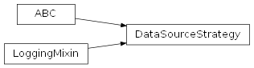
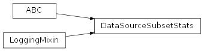
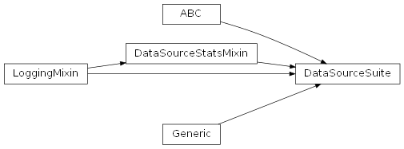
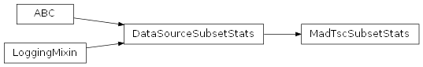
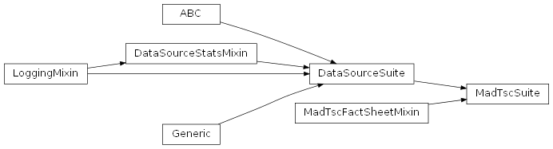
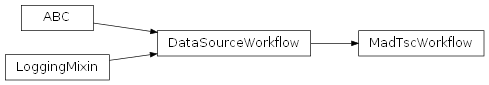

SentimentAnalysis.src.data_sources package
Submodules
SentimentAnalysis.src.data_sources.data_source_factory module
data_source_factory.py
Version 1.0, validated on 2025-05-01
This module provides a factory function to create and instantiate a new data source strategy based on a provided name prefix, strategy name and file name.
Functions
- get_data_source_strategy(data_source_prefix: str, strategy_name: str,
name: str | None = None) -> T:
Dynamically creates and returns an instance of the data source strategy.
- SentimentAnalysis.src.data_sources.data_source_factory.get_data_source_strategy(data_source_prefix: str, strategy_name: str, name: str | None = None) T[source]
Dynamically creates and returns an instance of a data source strategy.
This function dynamically creates and returns an instance of the specified data source strategy. It constructs a full class name by combining the ‘data_source_prefix’ and ‘strategy_name’ with the suffix ‘Strategy’. It then loads the corresponding class and returns an instance of it.
- Parameters:
data_source_prefix (str) – A string designing the data source. This string is prefixed to the strategy name. In the case of the MAD-TSC data source, it is used to represent the first part of the data source name only, i.e. ‘mad’.
strategy_name (str) –
A string designing the strategy. This is supposed to be the identifying middle name part of the data source strategy to use, which is needed to distinguish between different strategies that can be applied to the same data source.
For the MAD-TSC data source, since there is no need to distinguish between multiple possible strategies, the second part of the data source name (‘tsc’) is used to set the ‘strategy name’ so that the present method can dynamically compose a full strategy name.
name (str | None) – The name of the strategy, used for printing and logging purposes. The default is None, allowing the concrete strategy to set its own default name.
- Return type:
An instance of the specified strategy class.
Notes
The strategy name must match the corresponding class name exactly, including case sensitivity, as this function dynamically constructs the full name and loads the class.
Examples
>>> from src.data_sources.mad_tsc_strategy import MadTscStrategy >>> file_name = "test_file" >>> strategy: MadTscStrategy = get_data_source_strategy( ... 'mad', 'tsc', file_name ... )
SentimentAnalysis.src.data_sources.data_source_stats_mixin module
data_source_stats_mixin.py
Version 1.0, updated on 2025-05-01
- class SentimentAnalysis.src.data_sources.data_source_stats_mixin.DataSourceStatsMixin[source]
Bases:
LoggingMixinDataSourceStatsMixin class.
Mixin class for handling statistics-related functionalities for the data source suites.
This class provides properties and methods for computing, storing, and retrieving various statistics for data subsets within a data source suite.
- COL_DTYPES
A dictionary mapping column names to their respective data types (e.g., INT, FLOAT). This is used to assign appropriate data types to the columns of the statistics DataFrame.
- Type:
Dict[str, type]
- stats
The computed statistics.
- Type:
- transposed_stats
A MyDataFrame containing a transposed version of the stats MyDataFrame.
- Type:
MyDataFrame | None
- get_stats(category: str = '') MyDataFrame:[source]
Returns the statistics for the specified category.
- COL_DTYPES = {'%_negative': 'Float64', '%_neutral': 'Float64', '%_other': 'Float64', '%_positive': 'Float64', 'least_frequent_unique_elements': <class 'object'>, 'max_confidence': 'Float64', 'max_frequency': 'Int64', 'max_length': 'Int64', 'max_percentage_of_occurrences': 'Float64', 'max_polarity': 'Int64', 'max_sentences': 'Int64', 'max_words': 'Int64', 'mean_confidence': 'Float64', 'mean_frequency': 'Float64', 'mean_length': 'Float64', 'mean_percentage_of_occurrences': 'Float64', 'mean_polarity': 'Float64', 'mean_sentences': 'Float64', 'mean_words': 'Float64', 'median_confidence': 'Float64', 'median_frequency': 'Float64', 'median_length': 'Float64', 'median_percentage_of_occurrences': 'Float64', 'median_polarity': 'Float64', 'median_sentences': 'Float64', 'median_words': 'Float64', 'min_confidence': 'Float64', 'min_frequency': 'Int64', 'min_length': 'Int64', 'min_percentage_of_occurrences': 'Float64', 'min_polarity': 'Int64', 'min_sentences': 'Int64', 'min_words': 'Int64', 'most_frequent_unique_elements': <class 'object'>, 'n_elements': 'Int64', 'n_least_frequent_unique_elements': 'Int64', 'n_most_frequent_unique_elements': 'Int64', 'n_negative': 'Int64', 'n_neutral': 'Int64', 'n_other': 'Int64', 'n_positive': 'Int64', 'n_unique_elements': 'Int64', 'std_dev_frequency': 'Float64', 'std_dev_length': 'Float64', 'std_dev_percentage_of_occurrences': 'Float64', 'std_dev_polarity': 'Float64', 'std_dev_sentences': 'Float64', 'std_dev_words': 'Float64', 'unique_polarity': <class 'object'>}
- _assign_dtypes(stats: MyDataFrame) MyDataFrame[source]
Assigns the appropriate dtypes to the columns in the stats DataFrame.
- Parameters:
stats (MyDataFrame) – The stats DataFrame to assign dtypes to.
- Returns:
The stats DataFrame with the appropriate dtypes assigned.
- Return type:
- _compute_col_stats(col_name: str = '') None[source]
Computes statistics for the given column.
Calls the _compute_stats method to compute statistics for the given column of all loaded data subsets, telling the method which method to execute to get the column statistics.
- _compute_stats(compute_method: callable) None[source]
Computes statistics for all loaded data subsets.
Contains the common logic of the compute_all_stats and the _compute_col_stats methods.
- Parameters:
compute_method (callable) – A method that takes a subset_stats_instance and performs the specific stats computation.
Notes
This method does not return anything. Instead, it sets the stats property with the computed statistics.
The different subset stats consist of multiple rows, and a single column containing the data for the respective subset. When the different subset stats DataFrames are joined, the resulting DataFrame maintains this structure, the columns corresponding to the different subsets and the data in the columns being of different kinds. For this reason, the DataFrame is transposed at the end, so that the columns contain the same kind of data across all rows and can be assigned the appropriate data types.
- compute_all_stats() None[source]
Computes the statistics for all loaded data subsets.
Calls the _compute_stats method to compute all statistics for the loaded data subsets, telling the method which method to execute to get the relevant statistics.
Notes
This method is called automatically if the stats property is being accessed without having been set previously, but it can also be called from the outside, e.g. via the compute_statistics method of the data set’s workflow.
Examples
>>> from src.data_sources.mad_tsc_workflow import MadTscWorkflow
# Via the compute_statistics method of the workflow: >>> wf = MadTscWorkflow() >>> wf.load_subsets() >>> wf.compute_statistics()
# Direct call after initialization of the Workflow >>> wf = MadTscWorkflow() >>> wf.suite.compute_all_stats()
- get_stats(category: str = '') MyDataFrame[source]
Returns the stats for the specified stats category.
- Returns:
The stats DataFrame.
- Return type:
- property stats: MyDataFrame
Retrieves the statistics MyDataFrame.
If the statistics have not yet been computed and set, the compute_all_stats method is called to compute them.
- property transposed_stats: MyDataFrame | None
Retrieves the MyDataFrame containing a transposed statistics DataFrame.
If the transposed DataFrame has not been set yet or has been reset to None, the _transpose_stats_copy method is called to create a transposed DataFrame from a copy of the normal statistics DataFrame.
SentimentAnalysis.src.data_sources.data_source_strategy module
data_source_strategy.py
Version 1.0, updated on 2025-05-01
- class SentimentAnalysis.src.data_sources.data_source_strategy.DataSourceStrategy[source]
Bases:
ABC,LoggingMixinAbstract base class for data source strategies.
Serves as a blueprint for concrete data source strategies. Defines properties and methods for the management and the manipulation of data collections that the concrete data source strategies must implement.
- logger
The logger instance used for logging within the data source strategy subclasses.
- Type:
Logger
Abstract Attributes
- dataD
The data in the current strategy.
- base_descriptionstr
The base description of the data in its current strategy.
- languagestr
The language of the data.
- alphabetList[str]
The alphabet used in the data.
Abstract Methods
- add_columns() -> None:
Adds new computed columns to the data collection.
- add_text_length_column() -> None:
Adds a text length column to the data.
- add_word_count_column(tokenization_strategy_name=’’) -> None:
Adds a word count column to the data.
- create_subset_stats_instance() -> DataSourceSubsetStats:
Creates an instance of a SubsetStats class for the current strategy.
- extract_columns(subset_name_extension: str, col_names: List[str]) -> T:
Extracts a subset of the data containing only the specified columns.
- abstract _extract_subset(subset_name_extension: str, col_name: str, col_value: Any) T[source]
Extracts a subset of the data filtered by a given column value.
- Parameters:
subset_name_extension (str) – The string by which the data’s name will be extended to form the subset’s name.
col_name (str) – The name of the column in which to seek for the specified value.
col_value (Any) – The value for which to seek in the specified column
- Returns:
A new DataSourceStrategy instance containing the extracted subset.
- Return type:
T
- abstract add_columns() None[source]
Adds new computed columns to the data collection.
Adds new computed columns such as a text length column, a word count column, and a sentence count column.
Notes
The modified data is not returned. Instead, the data in the class instance is modified in place.
- abstract add_text_length_column() None[source]
Adds a text length column to the data.
Adds a column to the data that stores the length of the text from the ‘text’ column.
Notes
The data is modified in place and is not returned from this method.
- abstract add_word_count_column(tokenization_strategy_name='') None[source]
Adds a word count column to the data.
Adds a column to the data that stores the number of words contained in the ‘text’ column.
- Parameters:
tokenization_strategy_name (str) – The identifying first part of the name of the word tokenization strategy to use, e.g. “NoPunctuation” for the NoPunctuationStrategy. Defaults to an empty string.
Notes
If no tokenization strategy name is provided, the word tokenizer will use the default word tokenization strategy specified in the TokenizationMixin class.
The data is modified in place and is not returned from this method.
- property alphabet: List[str]
Returns the alphabet used in the data.
- Returns:
The alphabet used in the data.
- Return type:
List[str]
- abstract property base_description: str
Gets the base description of the data in its current strategy.
The base description is the basic description for any data stored in an instance of a class that implements the DataCollection class. It is passed from the current MMS strategy to the MmsStrategy base class at the moment of initialization. It includes information about:
the type of the data,
the name of the data,
the number of rows and columns,
the column names,
the names and values of the single-value columns dropped.
- Returns:
The base description of the data in its current strategy.
- Return type:
str
Notes
The base description is originally the content of the __str__ method in the DataCollection class, but it may have been overridden by the inheriting classes. For example, the MyDatasetDict class adds to it information about the number and the names of the splits contained in the class’s DatasetDict data structure before it passes the base description on to the MmsStrategy base class.
- abstract create_subset_stats_instance() DataSourceSubsetStats[source]
Creates an instance of a SubsetStats class for the current strategy.
Creates an instance of a concrete implementation of the SubsetStats class for the current strategy.
- Returns:
An instance of the SubsetStats class.
- Return type:
- abstract property data: D
Gets the data in the current strategy.
- Returns:
The data. Its concrete type depends on the type of DataCollection the current strategy uses to store the data.
- Return type:
D
- abstract extract_columns(subset_name_extension: str, col_names: List[str]) T[source]
Extracts a subset of the data containing only the specified columns.
- Parameters:
subset_name_extension (str) – The string by which the data’s name will be extended to form the subset’s name.
col_names (List[str]) – The names of the columns to include in the subset.
- Returns:
A new DataSourceStrategy instance containing the extracted subset.
- Return type:
T
- abstract property language: str
Gets the language of the data.
- Returns:
The language code of the data.
- Return type:
str
SentimentAnalysis.src.data_sources.data_source_subset_stats module
data_source_subset_stats.py
Version 1.0, updated on 2025-05-01
- class SentimentAnalysis.src.data_sources.data_source_subset_stats.DataSourceSubsetStats(subset: T)[source]
Bases:
ABC,LoggingMixinDataSourceSubsetStats class.
This is an abstract base class for computing subset statistics. It provides a framework for calculating various statistics (such as length, word count, sentiment, etc.) on a subset of data. Concrete implementations should define subset-specific statistics.
- subset
The data subset to be analyzed.
- Type:
SubsetStrategy
- subset_stats
The collected statistics of the current subset.
- Type:
- word_stats
The word statistics. Computed property without setter.
- Type:
- length_stats
The length statistics. Computed property without setter.
- Type:
- sentiment_stats
The sentiment statistics. Computed property without setter.
- Type:
- polarity_col_name
The name of the polarity column.
- Type:
str
- word_count_col_name
The name of the word count column.
- Type:
str
- length_col_name
The name of the text length column.
- Type:
str
- compute_col_stats(col_name: str) None:[source]
Computes and stores the statistics for the specified column of the subset.
- compute_all_subset_stats() None:[source]
Computes and stores the statistics for all columns of the subset.
- __init__(subset: T) None[source]
Constructor.
Initializes the DataSourceSubsetStats class with a subset that is to be analyzed.
- Parameters:
subset (T) – Subset that is to be analyzed.
- abstract _add_sentiment_frequencies(freqs: Counter, col_stats: Dict[str, float | int | List[int] | List[float] | List[str]]) Dict[str, float | int | List[int] | List[float] | List[str]][source]
Adds sentiment frequencies columns to the subset statistics.
- Parameters:
freqs – The frequencies of the values in the sentiment column.
col_stats – The subset statistics computed so far.
- Returns:
The subset statistics with sentiment frequencies added.
- Return type:
StatsType
Notes
As the sentiment categories may differ between subsets, the sentiment frequencies need to be added in the concrete subset stats implementation.
- abstract _add_sentiment_percentages(freqs: Counter, col_stats: Dict[str, float | int | List[int] | List[float] | List[str]]) Dict[str, float | int | List[int] | List[float] | List[str]][source]
Adds percentages of the sentiment polarities to the subset statistics.
- Parameters:
freqs (Counter) – A dictionary containing the frequencies of the sentiment values.
col_stats (StatsType) – The subset statistics computed so far.
- Returns:
The subset statistics dictionary with polarity percentages added.
- Return type:
StatsType
Notes
As the sentiment categories may differ between subsets, the polarity percentages need to be added in the concrete subset stats implementation.
- abstract _add_subset_specific_stats() None[source]
Adds additional statistics to the subset_stats property.
This method is called from the compute_all_subset_stats method.
Notes
As not only the statistics columns differ between subsets, but also their order is relevant, all the additional statistics need to be added in the concrete subset stats implementation.
- _add_to_subset_stats(other_stats: MyDataFrame) None[source]
Expands the subset_stats by the given stats.
Merges the additional stats DataFrame with the subset_stats DataFrame.
Notes
Using the ‘merge’ method, the columns of the second DataFrame are added behind the columns of the first DataFrame.
- _compute_categorical_col_stats(col_name: str, label: str) MyDataFrame[source]
Computes statistics for a given column with categorical values.
This method is called from the stats getters (e.g. word_stats, confidence_stats).
- Parameters:
col_name (str) – The name of the column for which to compute the statistics.
label (str) – The label to use for the statistics in the resulting MyDataFrame.
- Returns:
A MyDataFrame containing the computed column statistics.
- Return type:
- _compute_col_stats(col_name: str, label: str) MyDataFrame[source]
Computes statistics for a given column.
This method is called from the stats getters (e.g. word_stats, confidence_stats).
- Parameters:
col_name (str) – The name of the column for which to compute the statistics.
label (str) – The label to use for the statistics in the resulting MyDataFrame.
- Returns:
A MyDataFrame containing the computed column statistics.
- Return type:
- _compute_sentiment_col_stats(col_name: str, label: str) MyDataFrame[source]
Computes statistics for the sentiment column.
This method is called from the sentiment_stats getter.
- Parameters:
col_name (str) – The name of the column for which to compute the statistics.
label (str) – The label to use for the statistics in the resulting MyDataFrame.
- Returns:
A MyDataFrame containing the computed column statistics.
- Return type:
- _get_stats_field(row_name: str, col_name: str) int | float[source]
Returns the value of a given field in the subset_stats DataFrame.
- Parameters:
row_name (str) – The name of the row in the subset_stats DataFrame.
col_name (str) – The name of the column in the subset_stats DataFrame.
- Returns:
The value of the field in the subset_stats DataFrame.
- Return type:
int | float
- Raises:
CriticalException – If the subset_stats property has not been initialized.
- _initialize_subset_stats(col_name: str = '') None[source]
Initializes subset_stats with the stats for the given column.
Uses the ‘subset_stats’ setter to initialize the ‘subset_stats’ property with a copy of the stats for the given column.
- Parameters:
col_name (str) – The name of the column for which to compute the statistics.
- abstract _initialize_subset_stats_with_subset_specific_column(col_name: str) None[source]
Initializes subset_stats with the stats for a subset-specific column.
Uses the ‘subset_stats’ setter to initialize the ‘subset_stats’ property with a copy of the stats for the given column.
- Parameters:
col_name (str) – The name of the column for which to compute the statistics.
- _remove_double_n_elements(stats_dict: Dict[str, float | int | List[int] | List[float] | List[str]]) Dict[str, float | int | List[int] | List[float] | List[str]][source]
Removes double ‘n_elements’ from the stats dictionary.
Removes the double ‘n_elements’ key-value pair from the stats dictionary.
Checks whether the ‘n_elements’ value is the same in the current stats dictionary as in the length stats DataFrame. If it is, the ‘n_elements’ key-value pair is removed from the dictionary.
This method is used to ensure the element count is not included more than once in the final statistics if it is the same for all statistical categories (length, words, sentences, …).
- Parameters:
stats_dict (StatsType) – The stats dict to remove the ‘n_elements’ key-value pair from.
- Returns:
The stats dict with the ‘n_elements’ key-value pair removed.
- Return type:
StatsType
- abstract _set_subset_specific_column_names() None[source]
Sets the subset-specific column names for the subset stats dataframe.
- compute_all_subset_stats() None[source]
Computes and stores the statistics for all columns of the subset.
Computes the statistics of the Olympia subset and stores them in the subset_stats property.
Notes
The ‘subset_stats’ property is initialized with the length stats. The other computed statistics are gradually added to the initialized subset_stats.
- compute_col_stats(col_name: str = '') None[source]
Computes and stores the statistics for the given column of the subset.
Computes the statistics for the given column and stores them in the subset_stats property.
- Parameters:
col_name (str) – The name of the column for which to compute the statistics.
- property length_col_name: str
Gets the name of the text length column.
- property length_stats: MyDataFrame
Returns the calculated length statistics.
- Returns:
A MyDataFrame containing the length statistics.
- Return type:
Notes
This computed property has no setter.
Examples
Olympia_dataset_1
n_elements … min_length … max_length … mean_length … median_length …
- property polarity_col_name: str
Gets the name of the polarity column.
- property sentiment_stats: MyDataFrame
Returns the calculated sentiment statistics.
- Returns:
A MyDataFrame containing the sentiment statistics.
- Return type:
Notes
This computed property has no setter.
Examples
Olympia_dataset_1
min_polarity … max_polarity … mean_polarity … median_polarity …
- property subset
Returns the data subset.
- property subset_stats: MyDataFrame
Collects all statistics of the current subset.
The ‘subset_stats’ DataFrame corresponds to a table with multiple rows, one index column and one data column.
The fields in the index column contain the data labels (e.g., ‘min_length’, …). The data column is labeled with the subset’s name, e.g., ‘Olympia_dataset_1’ and contains the different statistical values corresponding to the rows’ labels.
Examples
Subset_name
n_elements … min_length … max_length … mean_length … median_length …
- property word_count_col_name: str
Gets the name of the word count column.
- property word_stats: MyDataFrame
Returns the calculated the word statistics.
- Returns:
A MyDataFrame containing the word statistics.
- Return type:
Notes
This computed property has no setter.
Examples
Olympia_dataset_1
min_words … max_words … mean_words … median_words …
SentimentAnalysis.src.data_sources.data_source_suite module
data_source_suite.py
Version 1.0, updated on 2025-05-01
- class SentimentAnalysis.src.data_sources.data_source_suite.DataSourceSuite[source]
Bases:
ABC,Generic[T],DataSourceStatsMixin,LoggingMixinDataSourceSuite class.
This abstract base class defines the methods for the import of a data source collection and the extraction or composition of the different data sets forming the suite.
- suite_name
The name of the data suite. (Read-only)
- Type:
str
- subset_names
A list of the names of the loaded subsets. (Read-only)
- Type:
List[str]
- strategy_names
A list of the strategy names available in the suite. (Read-only)
- Type:
List[str]
- combined_subsets
The combined subset of all data in the suite. This is computed by combining individual subsets when accessed.
- Type:
T
- STRATEGY_STR
A format string used for logging strategy-related messages.
- Type:
str
- SUBSET_STR
A format string used for logging subset-related messages.
- Type:
str
- LANG_DE
Constant for the German language code.
- Type:
str
- LANG_EN
Constant for the English language code.
- Type:
str
- LANG_ES
Constant for the Spanish language code.
- Type:
str
- LANG_FR
Constant for the French language code.
- Type:
str
- LANG_IT
Constant for the Italian language code.
- Type:
str
- LANG_NL
Constant for the Dutch language code.
- Type:
str
- LANG_PT
Constant for the Portuguese language code.
- Type:
str
- LANG_RO
Constant for the Romanian language code.
- Type:
str
- get_strategy(strategy_name: str) T | None:[source]
Retrieves the specified strategy from the suite.
- combine_subsets(subset_names: List[str] | None = None) T:[source]
Combines specified subsets into a single subset.
- Abstract Methods
- ----------------
- _compose_from_original_files(subset: T, strategy_name: str) None:[source]
Composes the specified subset from original files.
- STRATEGY_STR: str = "{self.SUITE_NAME} strategy '{strategy_name}'"
- SUBSET_STR: str = "{self.SUITE_NAME} subset '{subset_name}'"
- __init__() None[source]
Constructor.
Initializes a new instance of the DataSourceSuite class and provides private variables to store the different data subsets of the data suite in memory and make them accessible via properties.
- abstract _compose_from_original_files(subset: T, strategy_name: str) None[source]
Composes the specified subset from the original files.
- Parameters:
subset (T) – The subset to compose.
Notes
The created subset is not returned from this method but - stored in the _subsets dictionary of this class and - saved to disk according to the serialization strategy used by the
Olympia strategy of the subset (PKL format for DataFrame objects).
- _enforce_load(strategy_name: str) T[source]
Enforces loading the subset defined by the given strategy name.
If the subset data cannot be loaded from disk, an info message is logged and the data is composed from the original files.
- Parameters:
strategy_name (str) – The name of the Olympia strategy used to manage the subset.
- Returns:
The subset.
- Return type:
Subset
Notes
The loaded or fetched subset data is only returned by this method to enable the decorator to check its content. The caller will not use the return value but the subset in the _subsets collection of this class where it is identified by its strategy name.
- abstract _initialize_strategies() None[source]
Initialize all strategies, respecting their dependencies.
Each strategy is configured specifying - its strategy name, - its data type, - its file name, - its language, if there is only one
- combine_subsets(subset_names: List[str] | None = None) T[source]
Combines the specified subsets into a single subset.
- Parameters:
subset_names (List[str] | None) – The subsets to combine. Defaults to None. If no subset names are provided, all subsets in the suite are combined.
- Returns:
The combined subset.
- Return type:
T
- property combined_subsets: T
Returns the combined subsets of the data suite.
- get_strategy(strategy_name: str) T | None[source]
Gets the specified strategy from the _strategies dictionary.
- Parameters:
strategy_name (str) – The name of the strategy to return.
- Returns:
The specified strategy.
- Return type:
T | None
Notes
Use this method if the returned strategy may be None.
Use the use_strategy() method instead if you want to ensure that the strategy actually exists.
- get_subset(subset_name: str) T | None[source]
Gets the specified subset from the _subsets dictionary.
- Parameters:
subset_name (str) – The name of the subset to return.
- Returns:
The specified subset.
- Return type:
T | None
Notes
Use this method if the returned subset may be None.
Use the use_subset() method instead if you want to ensure that the subset actually exists.
- property languages: List[str]
Returns the languages present in the suite.
- load_subset(strategy_name: str) None[source]
Stores the specified data subset in the _subsets dictionary.
The data subset is loaded from disk, fetched from the original online or local source, or extracted from its superset and stored in the _subsets dictionary.
- Parameters:
strategy_name (str) – The name of the data subset.
- Raises:
CriticalException – If the specified data subset could not be loaded from disk, fetched from the online source or extracted from its superset.
Notes
The loaded, fetched or extracted subset data is not returned by this method but stored in the data structure of the respective strategy collected in the _subsets dictionary of this class
This method provides a standard way to load subsets. It may be overridden or extended by subclasses to satisfy specific needs.
- property strategy_names: List[str]
Returns a list of the strategy names.
Returns the list of the different strategy names in the suite.
- Returns:
The list of the strategy names.
- Return type:
List[str]
- property subset_names: List[str]
Returns the names of the loaded subsets.
- Returns:
The list of the subset names.
- Return type:
List[str]
Notes
Ensure you have executed the load_subsets method of the DataSourceWorkflow class before attempting to access this subset_names property.
- property suite_name: str
Returns the name of the data suite.
- Returns:
The name of the data suite.
- Return type:
str
- abstract to_string() str[source]
Provides a formatted string representation of the data in the current suite.
Expands the base description by suite specific details like the name and source of the data collection, the author(s) of the collection and the citation of the associated scientific paper. If the data is not yet initialized, the description includes statistical insights such as the numbers and names of the domains, languages and original datasets contained in the data.
- Returns:
A string representation of the data in the current MMS suite.
- Return type:
str
- use_strategy(strategy_name) T[source]
Gets the specified strategy from the _strategies dictionary.
Ensures the strategy exists before returning it.
- Parameters:
strategy_name (str) – The name of the strategy to return.
- Returns:
The specified strategy.
- Return type:
T
Notes
Use this method if you want to ensure that the strategy actually exists and want the method to raise an error if it does not.
Use the get_strategy() method instead if the returned strategy may be None and you want to handle this case individually.
- use_subset(subset_name: str) T[source]
Gets the specified subset from the _subsets dictionary.
Makes sure the subset exists before returning it.
- Parameters:
subset_name (str) – The name of the subset to return.
- Returns:
The specified subset.
- Return type:
T
- Raises:
CriticalException – If the subset does not exist.
Notes
Use this method if you want to ensure that the subset actually exists and you want the method to raise an error if it does not.
Use the get_subset() method instead if the returned subset may be None and you want to handle this case individually.
SentimentAnalysis.src.data_sources.data_source_workflow module
data_source_workflow.py
Version 1.0, updated on 2025-05-01
- class SentimentAnalysis.src.data_sources.data_source_workflow.DataSourceWorkflow(data_suite: T)[source]
Bases:
ABC,LoggingMixinDataSourceWorkflow class.
Base class for workflows of data sources.
Povides common methods and properties to manage and interact with data suites. Concrete subclasses should implement and extend the functionalities of this base class according to the needs of the specific data source.
- data_suite
An instance of the data suite class.
- Type:
T
Notes
Together with its concrete implementations, this base class constitutes the entry point for any operations on the data suite the concrete workflow is designed for. It provides easy access to the functionalities of the suite and its associated classes.
Examples
To access the suite, first initialize the workflow: >>> from src.data_sources.mad_tsc_workflow import MadTscWorkflow
>>> wf = MadTscWorkflow() >>> wf.load_subsets() >>> suite = wf.suite
Then do any operations the workflow or the suite provide.

- __init__(data_suite: T) None[source]
Constructor.
Initializes the DataSourceWorkflow class with a data suite.
- Parameters:
data_suite (T) – Data suite to be managed by the workflow..
- abstract execute() None[source]
Defines which operations are included and executed when the workflow is executed.
This method must be implemented by concrete subclasses to allow for data source-specific workflows.
- load_subsets(subsets: List[str] | None = None) None[source]
Loads the specified subsets of the dataset.
If no subsets are specified, all subsets contained in the suite are loaded.
- Parameters:
subsets (List[str] | None) – A list of subset names to be loaded. Defaults to all subsets in the suite.
- property suite: T
Gets the data suite.
- Returns:
An instance of the data suite class.
- Return type:
T
SentimentAnalysis.src.data_sources.mad_tsc_fact_sheet_mixin module
mad_tsc_fact_sheet_mixin.py
Version 1.0, validated on 2024-09-02
- class SentimentAnalysis.src.data_sources.mad_tsc_fact_sheet_mixin.MadTscFactSheetMixin[source]
Bases:
objectMadTscFactSheetMixin class.
This class provides a description of the MadTsc data collection, and constants regarding its online resources and local storage location. They are used in the MadTscsSuite and MadTscStrategy classes.
- AUTHOR = 'E. Dufraisse, A. Popescu, J. Tourille, A. Brun, and J. Deshayes'
- DESCRIPTION = "--------------------------------------------------------\n \nGitHub data from https://github.com/EvanDufraisse/MAD_TSC \n========================================================\n \nMultilingual aligned news dataset with 5110 samples in 8 languages (manually translated and automatically aligned) collected from VoxEurop (https://voxeurop.eu)\nby: \nE. Dufraisse, A. Popescu, J. Tourille, A. Brun, and J. Deshayes, 'MAD-TSC: A Multilingual Aligned News Dataset for Target-dependent Sentiment Classification', \nin Proceedings of the 61st Annual Meeting of the Association for Computational Linguistics (Volume 1: Long Papers), Toronto, Canada, 2024, pp. 8286-8305. \n[Online]. Available: https://aclanthology.org/2023.acl-long.461.pdf.\n--------------------------------------------------------\n \n"
- IN = 'Proceedings of the 61st Annual Meeting of the Association for Computational Linguistics (Volume 1: Long Papers), Toronto, Canada'
- ORIG_DIR = 'mad_tsc'
- PAGES = '8286-8305'
- PLATFORM = 'GitHub'
- PUBLICATION_URL = 'https://aclanthology.org/2023.acl-long.461.pdf'
- TITLE = 'MAD-TSC: A Multilingual Aligned News Dataset for Target-dependent Sentiment Classification'
- URL = 'https://github.com/EvanDufraisse/MAD_TSC'
- YEAR = '2024'
SentimentAnalysis.src.data_sources.mad_tsc_strategy module
mad_tsc_strategy.py
Version 1.0, updated on 2025-05-01
- class SentimentAnalysis.src.data_sources.mad_tsc_strategy.MadTscStrategy(name: str = '', data: D | None = None, source: str = '', base_description: str = '')[source]
Bases:
MyData,DataSourceStrategy,MadTscFactSheetMixinMadTscStrategy class.
- WORD_TOKENIZATION_STRATEGY
The default strategy for word tokenization.
- Type:
str
- SENTENCE_TOKENIZATION_STRATEGY
The default strategy for sentence tokenization.
- Type:
str
- TEXT_COLUMN_NAME
The name of the column containing the text data. Overrides the constant in the MyData class.
- Type:
str
- SPLIT_COLUMN_NAME
The name of the column that indicates the data split (e.g., train/test).
- Type:
str
- GID_COLUMN_NAME
The name of the column containing the primary GID.
- Type:
str
- TARGETS_COLUMN_NAME
The name of the column containing the targets.
- Type:
str
- TEXT_DUPLICATES_COUNT_COLUMN_NAME
The name of the column for storing the count of text duplicates.
- Type:
str
- TARGET_COUNT_COLUMN_NAME
The name of the column for storing the count of targets in a row.
- Type:
str
- FROM_COLUMN_NAME
The name of the column for storing the ‘from’ field of the target.
- Type:
str
- TO_COLUMN_NAME
The name of the column for storing the ‘to’ field of the target.
- Type:
str
- MENTION_COLUMN_NAME
The name of the column for storing the ‘mention’ field of the target.
- Type:
str
- NUMERICAL_SENTIMENT_POLARITY_COLUMN_NAME
The name of the column for storing the numerical sentiment polarity.
- Type:
str
- POSITIVE
The constant value representing positive sentiment.
- Type:
int
- NEGATIVE
The constant value representing negative sentiment.
- Type:
int
- NEUTRAL
The constant value representing neutral sentiment.
- Type:
int
- name
The name of the strategy.
- Type:
str
- split_type
The type of split the data in the current strategy represents (e.g., train, test).
- Type:
str
- data
The data of the strategy.
- Type:
D | None
- base_description
The base description of the data in the current strategy.
- Type:
str
- language
The language code of the data.
- Type:
str
- n_rows_with_multiple_targets
The number of rows with multiple targets. Computed property without setter.
- Type:
int
- add_word_count_column(tokenization_strategy_name: str = '') None:[source]
Adds a word count column to the DataFrame.
- are_cols_identical(
col_name: str, other: MadTscStrategy, other_col_name: str) -> bool:
Checks if columns in the current data and another subset are identical.
- create(subsets: List[MadTscStrategy]) None:[source]
Creates the data in the current strategy by joining the subsets.
- create_subset_stats_instance() MadTscSubsetStats:[source]
Creates an instance of MadTscSubsetStats for the current strategy.
- extract_columns(subset_name_extension: str, col_names: List[str])[source]
-> MadTscStrategy:
Extracts a subset of the data containing only the specified columns.
- filter_by_split(split_type: str) MadTscStrategy:[source]
Filters the data by the specified split type.
- join(subset: MadTscStrategy) None:[source]
Joins the data columns in the subset with the current data.
- to_string() str:[source]
Provides a formatted string representation of the data in the current strategy.

- FROM_COLUMN_NAME = 'from'
- GID_COLUMN_NAME = 'primary_gid'
- MENTION_COLUMN_NAME = 'mention'
- NEGATIVE = 2
- NEUTRAL = 4
- NUMERICAL_SENTIMENT_POLARITY_COLUMN_NAME = 'polarity'
- POSITIVE = 6
- SENTENCE_TOKENIZATION_STRATEGY = 'RegexWithColons'
- SPLIT_COLUMN_NAME = 'original_file'
- TARGETS_COLUMN_NAME = 'targets'
- TARGET_COUNT_COLUMN_NAME = 'n_targets'
- TEXT_COLUMN_NAME = 'sentence_normalized'
- TEXT_DUPLICATES_COUNT_COLUMN_NAME = 'n_duplicates'
- TO_COLUMN_NAME = 'to'
- WORD_TOKENIZATION_STRATEGY = 'NoPunctuation'
- __init__(name: str = '', data: D | None = None, source: str = '', base_description: str = '') None[source]
Constructor.
Initializes a new instance of the MadTscStrategy class with the provided parameters.
- Parameters:
name (str) – The name of the MAD-TSC strategy. Defaults to an empty string.
data (D) – The data of the strategy. Defaults to None.
source (str) – The source path of the strategy. Defaults to an empty string.
base_description (str) – The base description of the data in the current strategy.
- _add_target_count_column() None[source]
Adds a target count column to the DataFrame.
Adds a column to the DataFrame that stores the number of targets contained in the ‘targets’ column.
Notes
The DataFrame is modified in place and is not returned from this method.
- _add_target_detail_column(category: str, col_name: str) None[source]
Adds a target detail column for the specified category.
- Parameters:
category (str) – The name of the category to add the target detail column for.
col_name (str) – The name of the target detail column to add.
- _add_target_detail_columns() None[source]
Adds columns for categories extracted from the targets column.
Adds separate columns to the DataFrame extracting the values from the targets column.
Notes
The DataFrame is modified in place and is not returned from this method.
- _add_text_duplicates_count_column() None[source]
Adds a text duplicates count column to the DataFrame.
Adds a column to the DataFrame that stores the number of times the text in the ‘text’ column appears. Duplicate text has multiple targets, each treated in a separate row. Therefore, the number of duplicates corresponds to the number of targets identified in the text.
Notes
The DataFrame is modified in place and is not returned from this method.
- _ensure_no_duplicate_gids() None[source]
Ensures that there are no duplicate GIDs in the data.
- Raises:
CriticalException – If there are duplicate GIDs in the data.
- _ensure_no_multiple_targets() None[source]
Ensures that there is only one target per row.
Creates a temporary column that counts the numbers of targets in the ‘targets’ column. Uses the n_rows_with_multiple_targets property to check for rows with multiple targets. If there are any, a ValueError is raised.
- _extract_subset(subset_name_extension: str, col_name: str, col_value: Any) MadTscStrategy[source]
Extracts a subset of the data filtered by a given column value.
- Parameters:
subset_name_extension (str) – The string by which the data’s name will be extended to form the subset’s name.
col_name (str) – The name of the column in which to seek for the specified value.
col_value (Any) – The value for which to seek in the specified column
- Returns:
A new MadTscStrategy instance containing the extracted subset.
- Return type:
Notes
This method implements the corresponding abstract method in the DataSourceStrategy interface.
- _extract_target_details() None[source]
Extracts target details from the targets column into separate columns.
- _get_rows_with_multiple_targets() DataFrame[source]
Gets rows with multiple targets.
- Returns:
A DataFrame containing the rows with multiple targets.
- Return type:
DataFrame
- _set_data(data: D | DataFrame | None) None[source]
Sets the data property enforcing the data is of type D.
- Parameters:
data (D | DataFrame | None) – The data to set.
Notes
Sets the value of the _data variable provided by the ‘MyData’ parent’s parent class, ‘DataCollection’.
Uses the ‘enforce_input_types’ decorator to ensure that the input data is of type D, DataFrame or None. If it is a simple pandas DataFrame, it is wrapped in a MyDataFrame, so that _data is guaranteed to be of type MyDataFrame or None.
The input data comes in a simple pandas DataFrame format when loaded from a file using the PKL serialization strategy.
- _set_source() None[source]
Sets the source of the data.
As the original files are stored in language-dependent subdirectories of a local directory, the source is composed of the local directory and the subdirectory corresponding to the language of the current strategy.
- add_columns() None[source]
Adds new computed columns to the data collection.
Adds new computed columns such as a text length column, and a word count column.
Notes
The modified data is not returned. Instead, the data in the class instance is modified in place.
- add_text_length_column() None[source]
Adds a text length column to the DataFrame.
Adds a column to the DataFrame that stores the length of the text from the ‘text’ column.
Notes
The DataFrame is modified in place and is not returned from this method.
- add_word_count_column(tokenization_strategy_name='') None[source]
Adds a word count column to the DataFrame.
Adds a column to the DataFrame that stores the number of words contained in the ‘text’ column.
This method delegates the task of implementing the parent’s corresponding abstract method to the specific data structure (‘MyData’) this class is implementing.
- Parameters:
tokenization_strategy_name (str) – The identifying first part of the name of the word tokenization strategy to use, e.g. “NoPunctuation” for the NoPunctuationStrategy. Defaults to an empty string.
Notes
If no tokenization strategy name is provided, the word tokenizer will use the default word tokenization strategy specified in the TokenizationMixin class.
The DataFrame is modified in place and is not returned from this method.
- are_cols_identical(col_name: str, other: MadTscStrategy, other_col_name: str) bool[source]
Checks if columns in the current data and another subset are identical.
Checks if the specified columns in the current data and another subset are identical.
- Parameters:
col_name (str) – The name of the column in the current data.
other (MadTscStrategy) – The other strategy to compare with.
other_col_name (str) – The name of the column in the other strategy.
- Returns:
True if the columns are identical, False otherwise.
- Return type:
bool
- property base_description: str
Gets the base description of the data in its current strategy.
The base description is the basic description for any data stored in an instance of a class that implements the DataCollection class. It is passed from the current MadTsc strategy to the MadTscStrategy base class at the moment of initialization. It includes information about:
the type of the data,
the name of the data,
the number of rows and columns,
the column names,
the names and values of the single-value columns dropped.
- Returns:
The base description of the data in its current strategy.
- Return type:
str
Notes
The base description is originally the content of the __str__ method in the DataCollection class, but it may have been overridden by the inheriting classes. For example, the MyDatasetDict class adds to it information about the number and the names of the splits contained in the class’s DatasetDict data structure before it passes the base description on to the MmsStrategy base class.
- create(subsets: List[MadTscStrategy]) None[source]
Creates the data in the current strategy.
Creates the data in the current strategy by joining the subsets loaded from the original files.
- Parameters:
subsets (List[T]) – The subsets of the data to be joined.
Notes
For each subset, the original file name is stored in the ‘original_file’ column, providing additional information, if needed, regarding
the topic of the samples (e.g., ‘’london’, ‘rio’)
the news outlet from which the samples were collected (e.g., ‘bbc’, ‘globo’)
The ‘original’ file names are the file names used in this project to store and use the original data files. They differ from the file names of the original files downloaded from their online sources. They were re-named for more clarity and convenience in this project. Here is the list of file names as used in this project compared to the online sources:
The unchanged files from the online sources are stored in the ZIP files in the ‘original_files’ subfolders of the xls dataset directories.
The created data is stored in the ‘data’ attribute of the current strategy. It is up to the caller to save the composed data.
- create_subset_stats_instance() MadTscSubsetStats[source]
Creates an instance of MadTscSubsetStats for the current strategy.
- Returns:
An instance of the MadTscSubsetStats class.
- Return type:
- property data: D | None
Gets the data in the current strategy.
Gets the data from the MyData parent.
- Returns:
The data in the current strategy.
- Return type:
D
- extract_columns(subset_name_extension: str, col_names: List[str]) MadTscStrategy[source]
Extracts a subset of the data containing only the specified columns.
- Parameters:
subset_name_extension (str) – The string by which the data’s name will be extended to form the subset’s name.
col_names (List[str]) – The names of the columns to include in the subset.
- Returns:
A Subset of the same type as the current strategy.
- Return type:
- filter_by_split(split_type: str) T[source]
Filters the data by the specified split type.
- Parameters:
split_type (str) – The name of the split type to filter by.
- Returns:
The extracted subset of the data as another instance of the same class as the current class.
- Return type:
T
- get_original_file_name() str[source]
Gets the original file name of the data.
Gets the name of the original file from which to fetch the data.
- Returns:
The original file name of the data.
- Return type:
str
- join(subset: MadTscStrategy) None[source]
Joins the data columns in the subset with the current data.
Joins each of the the data columns in the subset with the current data provided that the data column’s values are not identical with those of the corresponding column from the first subset that was used as the base of the combined subset (i.e., the ‘_de’ subset).
- Parameters:
subset (T) – The subset to be joined.
- property language: str
Gets the language of the data.
- Returns:
The language code of the data.
- Return type:
str
- load()[source]
Loads the data from its local storage location into the DatasetDict.
Uses the load_if_possible method provided by the DataSerializationMixin in the MyData parent class to load the data.
Notes
The loaded data is not returned but stored in the “data” property.
- property n_rows_with_multiple_targets: int
Gets the number of rows with multiple targets.
- Returns:
The number of rows with multiple targets.
- Return type:
int
- property name: str
Gets the name of the data.
- preprocess() None[source]
Preprocesses the data in the current strategy.
Notes
The modified data is not returned. Instead, the data in the class instance is modified in place.
- set_index(col_name: str) None[source]
Sets the index of the data in the current strategy.
- Parameters:
col_name (str) – The name of the column to be used as index.
Notes
The modified data is not returned. Instead, the data in the class instance is modified in place.
- set_source() None[source]
Sets the source of the data.
As the original files are stored in language-dependent subdirectories of a local directory, the source is composed of the local directory and the subdirectory corresponding to the language of the current strategy.
- property split_type: str
Gets the split type the data in the current strategy represents.
- to_string() str[source]
Provides a formatted string representation of the data in the current MMS strategy.
Expands the base description by MMS specific details like the name and source of the data collection, the author(s) of the collection and the citation of the associated scientific paper. If the MMS data is not yet initialized, the description includes statistical insights such as the numbers and names of the domains, languages and original datasets contained in the data.
- Returns:
A string representation of the data in the current MMS strategy.
- Return type:
str
SentimentAnalysis.src.data_sources.mad_tsc_subset_stats module
mad_tsc_subset_stats.py
Version 1.0, updated on 2025-05-01
- class SentimentAnalysis.src.data_sources.mad_tsc_subset_stats.MadTscSubsetStats(subset: MadTscStrategy)[source]
Bases:
DataSourceSubsetStatsMadTscSubsetStats class
This class provides the statistics of a subset of the MAD_TSC data suite. It extends the ‘DataSourceSubsetStats’ class and includes additional methods to handle MAD-TSC-specific characteristics, such as sentiment analysis and mention statistics.
- subset
The MAD-TSC subset that is to be analyzed.
- Type:
- sentence_count_col_name
The name of the column in the subset that contains sentence counts.
- Type:
str
- mention_col_name
The name of the column in the subset that contains mention data.
- Type:
str
- sentence_stats
The sentence statistics as a MyDataFrame. Computed property without setter.
- Type:
- mention_stats
The mention statistics as a MyDataFrame. Computed property without setter.
- Type:
- __init__(subset: MadTscStrategy) None[source]
Constructor.
Initializes the MadTscSubsetStats class with a MAD-TSC subset that is to be analyzed.
- Parameters:
subset (MadTscStrategy) – The MAD-TSC subset that is to be analyzed.
- _add_sentiment_frequencies(freqs: Counter, col_stats: Dict[str, float | int | List[int] | List[float] | List[str]]) Dict[str, float | int | List[int] | List[float] | List[str]][source]
Adds sentiment frequencies to the subset statistics.
This method is called from the _compute_sentiment_col_stats method to add counts of positive, negative, neutral, and possibly none sentiments to the statistics.
- Parameters:
freqs (Counter) – A dictionary containing the frequencies of the sentiment values.
col_stats (StatsType) – The subset statistics computed so far.
- Returns:
The subset statistics dictionary with sentiment frequencies added.
- Return type:
StatsType
- _add_sentiment_percentages(freqs: Counter, col_stats: Dict[str, float | int | List[int] | List[float] | List[str]]) Dict[str, float | int | List[int] | List[float] | List[str]][source]
Adds percentages of the sentiment polarities to the subset statistics.
This method is called from the _compute_sentiment_col_stats method to calculate and add the percentages of positive, negative, neutral, and possibly none sentiments to the statistics.
- Parameters:
freqs (Counter) – A dictionary containing the frequencies of the sentiment values.
col_stats (StatsType) – The subset statistics computed so far.
- Returns:
The subset statistics dictionary with polarity percentages added.
- Return type:
StatsType
- _add_subset_specific_stats() None[source]
Adds the subset-specific statistics to the subset stats DataFrame.
Gathers various statistics specific to the MAD-TSC subset and adds them to the subset stats DataFrame.
- _initialize_subset_stats_with_subset_specific_column(col_name: str = '') None[source]
Initializes subset_stats with the stats for the given column.
This method initializes the ‘subset_stats’ property by copying the statistics for the column specified by the provided column name.
- Parameters:
col_name (str) – The name of the column for which to compute the statistics.
- _set_subset_specific_column_names() None[source]
Sets subset-specific column names for the subset stats dataframe.
Notes
As the statistics columns may differ between data sources depending on the data provided by the sources, the columns have to be set in each concrete DataSourceSubsetStats class.
- property mention_stats: MyDataFrame
Retrieves the mention statistics.
- Returns:
A MyDataFrame containing the mention statistics.
- Return type:
Notes
This computed property has no setter.
Not all data sources provide text containing mentions. Therefore, this method has to be implemented in the concrete DataSourceSubsetStats classes if needed.
- property sentence_stats: MyDataFrame
Retrieves the sentence statistics.
- Returns:
A MyDataFrame containing the sentence statistics.
- Return type:
Notes
This computed property has no setter.
Not all data sources provide text containing sentences. Therefore, this method has to be implemented in the concrete DataSourceSubsetStats classes if needed.
Examples
Subset name
min_sentences … max_sentences … mean_sentences … median_sentences …
SentimentAnalysis.src.data_sources.mad_tsc_suite module
mad_tsc_suite.py
Version 1.0, updated on 2025-05-01
- class SentimentAnalysis.src.data_sources.mad_tsc_suite.MadTscSuite[source]
Bases:
DataSourceSuite,MadTscFactSheetMixinMadTscSuite class.
This class serves as an interface that declares common operations for all supported MAD-TSC suite strategies, including loading, processing and comparing data subsets across different languages and splits. It extends functionality from the DataSourceSuite class, respecting the specific characteristics of the MAD-TSC suite.
- SUITE_NAME
The name of the data suite.
- Type:
str
- SUITE_PREFIX
The prefix used for naming strategies and files in the suite.
- Type:
str
- SPLIT_TRAIN
The string identifier for the training split.
- Type:
str
- SPLIT_TEST
The string identifier for the testing split.
- Type:
str
- SPLIT_VAL
The string identifier for the validation split.
- Type:
str
- languages
A list of supported language codes in the suite. (Read-only)
- Type:
List[str]
- splits
A list of supported data splits (e.g., train, test, validation). (Read-only)
- Type:
List[str]
- are_cols_identical(subset: T, other: T, col_name: str) bool:[source]
Checks if a specific column is identical between two subsets.
- compare_cols(col_name: str, subset_names: List[str] | None = None) None:[source]
Compares a specific column across multiple subsets.
- get_comparison_column(subset: T, other: T, col_name: str) Series:[source]
Compares a specific column between two subsets row by row.
- get_sentiment_distributions(language: str = 'en', batch_size: int = 100)[source]
-> DataFrame:
Calculates sentiment distributions for a specified language and batch size.
- show_compare_cols(col_name: str, additional_col_name: str = '')[source]
-> MyDataFrame:
Compares columns across different subsets and returns a DataFrame with the results.
- NON_QUERY_COLS = ['sentence_normalized', 'mention', 'polarity']
- SPLIT_TEST: str = 'test'
- SPLIT_TRAIN: str = 'train'
- SPLIT_VAL: str = 'validation'
- STRATEGY_STR: str = "{self.SUITE_NAME} strategy '{strategy_name}'"
- SUBSET_STR: str = "{self.SUITE_NAME} subset '{subset_name}'"
- SUITE_NAME: str = 'MadTsc'
- SUITE_PREFIX: str = 'mad_tsc'
- __init__()[source]
Initializes a new instance of the MadTsc class and provides private variables to store the different data subsets of the data suite in memory and make them accessible via properties.
- _compose_file_name(language: str) str[source]
Composes the file name of the subset identified by the specified parameters.
- Parameters:
language (str) – The language of the subset.
- Returns:
The file name of the subset.
- Return type:
str
- _compose_from_original_files(subset: T, strategy_name: str) None[source]
Composes the specified subset from the original files.
- Parameters:
subset (T) – The subset to compose.
Notes
The created subset is not returned from this method but - stored in the _subsets dictionary of this class and - saved to disk according to the serialization strategy used by the
Olympia strategy of the subset (PKL format for DataFrame objects).
- _compose_strategy_name(language: str) str[source]
Composes the name of the strategy.
Composes the name of the strategy that is identified by the specified parameters.
- Parameters:
language (str) – The language of the strategy.
- Returns:
The name of the strategy.
- Return type:
str
- _initialize_strategies() None[source]
Initialize all strategies, respecting their dependencies.
Each strategy is configured specifying - its strategy name, - its data type, - its file name, - its language, if there is only one, - its dataset name, if there is only one.
- static are_cols_identical(subset: T, other: T, col_name: str) bool[source]
Checks if a specific column is identical between two subsets.
- Parameters:
subset (MadTscStrategy) – The first subset to compare.
other (MadTscStrategy) – The second subset to compare.
col_name (str) – The name of the column to compare.
- Returns:
True if the columns are identical, False otherwise.
- Return type:
bool
- choose_subset(language: str) T[source]
Returns the subset with the specified language.
- Parameters:
language (str) – The language of the subset.
- Returns:
The subset.
- Return type:
Subset
Notes
The subset must be loaded before calling this method.
- compare_cols(col_name, subset_names: List[str] | None = None) None[source]
Compares corresponding columns in different subsets.
Uses the first subset in the list as the base subset to which the other subsets are compared.
- Parameters:
col_name – The name of the columns to compare.
subset_names (List[str] | None) – The names of the subsets whose columns are to be compared. Defaults to None. If the list is empty or None, it is set to all loaded subsets.
- get_comparison_column(subset: T, other: T, col_name: str) Series[source]
Compares a specific column between two subsets row by row.
This method returns a boolean Series indicating whether the values in the specified column of one subset are equal to the corresponding values in the same column of another subset.
- Parameters:
subset (T) – The first subset to compare.
other (T) – The second subset to compare.
col_name (str) – The name of the column to compare between the two subsets.
- Returns:
A pandas Series of booleans where each entry is True if the corresponding values in the columns are equal, and False otherwise.
- Return type:
Series
- show_compare_cols(col_name: str, additional_col_name: str = '') MyDataFrame[source]
Compares columns across different subsets and returns the result.
Compares columns across different subsets and returns a DataFrame with the results.
- Parameters:
col_name (str) – The name of the column to compare across the subsets.
additional_col_name (str) – The name of an additional column to include in the comparison. Defaults to an empty string.
- Returns:
A DataFrame containing the comparison results.
- Return type:
- property splits: List[str]
- to_string() str[source]
Provides a formatted string representation of the data in the current suite.
Expands the base description by suite specific details like the name and source of the data collection, the author(s) of the collection and the citation of the associated scientific paper. If the data is not yet initialized, the description includes statistical insights such as the numbers and names of the domains, languages and original datasets contained in the data.
- Returns:
A string representation of the data in the current MMS suite.
- Return type:
str
SentimentAnalysis.src.data_sources.mad_tsc_workflow module
mad_tsc_workflow.py
Version 1.0, updated on 2025-05-01
- class SentimentAnalysis.src.data_sources.mad_tsc_workflow.MadTscWorkflow[source]
Bases:
DataSourceWorkflowMadTscWorkflow class.
This class implements the DataSourceWorkflow base class. It provides easy access to the functionalities of the MadTscSuite and the classes associated with the MAD-TSC data source, facilitating the loading, analysis and comparison of its subsets.
It’s main functionality is the “execute” method.
- POLARITY_COL_NAME
Name of the column containing polarity data.
- Type:
str
- MENTION_COL_NAME
Name of the column containing mention data.
- Type:
str
- N_SENTENCES_COL_NAME
Name of the column containing the number of sentences.
- Type:
str
- TEXT_COL_NAME
Name of the column containing the normalized sentence text.
- Type:
str
- chosen_subset
The currently selected subset strategy.
- Type:
- mentions
The “mentions” column of the chosen subset, wrapped in a Mentions object. Computed property without setter.
- Type:
- mentions_and_polarities
The combined dataframe of mentions and polarities.
- Type:
- mentions_comparison
The comparison of mentions across the subsets. (read-only)
- Type:
- n_sentences_comparison
The comparison of the number of sentences across the subsets.
- Type:
- stats
The statistics of the MAD-TSC suite. (read-only)
- Type:
- combined_feature(feature: str) MadTscStrategy:[source]
Returns the specified feature extracted from the combined subsets.
- combined_split_feature(split: str, feature: str) MadTscStrategy:[source]
Returns the specified feature extracted from the combined split subsets.
- compare_n_sentences() None:[source]
Compares the number of sentences across the subsets and prints whether they are identical or differ.
- compare_mentions_freq_diagrams(languages: List[str]) None:[source]
Prints mention frequency diagrams for the specified languages.
- compare_mentions() None:[source]
Compares the mentions across the subsets and prints whether they are identical or differ.
- compare_polarities() None:[source]
Compares the polarities across the subsets and prints whether they are identical or differ.
- choose_subset(language: str = 'en') None:[source]
Sets the chosen_subset property to the specified language subset.
- mentions_freq_diagram(min_freq: int = 2, max_n: int = 30) None:[source]
Displays a frequency diagram of the mentions based on the specified parameters.
- MENTION_COL_NAME: str = 'mention'
- N_SENTENCES_COL_NAME: str = 'n_sentences'
- POLARITY_COL_NAME: str = 'polarity'
- TEXT_COL_NAME: str = 'sentence_normalized'
- choose_subset(language: str = 'en') None[source]
Sets the chosen_subset property.
Selects the subset with the specified language and sets the “chosen_subset” property accordingly.
- Parameters:
language (str) – The language of the subset. Defaults to ‘en’.
Notes
The selected subset is not returned but used to set the chosen_subset property of this class.
- property chosen_subset: MadTscStrategy
Gets the currently selected subset strategy.
If currently there is no subset strategy selected, the choose_subset method is called letting it set a default subset.
- combine_subsets() MadTscStrategy[source]
Combines all subsets in one single subset.
- Returns:
An instance of MadTscStrategy.
- Return type:
- combined_feature(feature: str) MadTscStrategy[source]
Returns extracted feature columns from combined subsets.
Extracts the specified feature from the combined subsets and returns the corresponding subset strategy.
- Parameters:
feature (str) – The feature to be extracted.
- Returns:
An instance of MadTscStrategy.
- Return type:
- combined_split_feature(split: str, feature: str) MadTscStrategy[source]
Returns extracted feature columns from combined split subsets.
Extracts the specified feature from the combined split subsets and returns the corresponding subset strategy.
- Parameters:
split (str) – The split identifier for the subsets.
feature (str) – The feature to be extracted.
- Returns:
An instance of MadTscStrategy with the extracted feature.
- Return type:
- compare_mentions() None[source]
Compares the mentions across the subsets.
Compares the mentions across the subsets and prints whether the columns are identical or differ.
Notes
For the MAD-TSC suite, the mention columns are expected to differ across the subsets, due to the different character sets the different languages use. The same person’s name may be written differently in different languages.
See also
mentions_comparisonMyDataFrame A MyDataFrame object providing insights into the differences between mentions in the different languages.
- compare_mentions_freq_diagrams(languages: List[str]) None[source]
Prints mention frequency diagrams for the specified languages.
- Parameters:
languages (List [str]) – List of language codes for the languages to include in the comparison.
- compare_n_sentences() None[source]
Compares the number of sentences across the subsets.
Compares the numbers of sentences across the subsets and simply prints whether the columns are identical or differ.
Notes
The numbers of sentences are expected to differ across languages for various reasons:
Translation from one language to another does not respect sentence boundaries as, in different languages, there might be different conventions as to what sentence length is acceptable for a reader and what information can conveniently be joined in one sentence and what has better be packed in a new sentence. So, one sentence in one language can correspond, e.g., to half a sentence in another language or even to several sentences in yet another language.
Punctuation marks used in abbreviations, dates, etc. may cause the tokenizer to incorrectly set the sentence boundaries in one language, whilst correctly identifying them in another language.
See also
n_sentences_comparisonMyDataFrame A MyDataFrame object providing insights into how samples presenting different numbers of sentences across languages look like.
- compare_polarities() None[source]
Compares the polarities across the subsets.
Compares the polarities across the subsets and prints whether the columns are identical or differ.
Notes
For the MAD-TSC suite, the polority columns should be the same across all subsets.
- property mentions: Mentions
Gets the entire “mentions” column of the chosen subset.
Gets the entire “mentions” column of the currently chosen subset and returns it as a Mentions object.
- property mentions_and_polarities: MyDataFrame
Gets the mentions and polarities MyDataFrame.
- property mentions_comparison: MyDataFrame
Gets a MyDataFrame showing the differences between mentions.
Gets a MyDataFrame showing the differences between mentions across subsets.
If the comparison has not been previously computed, it is calculated by comparing the mention columns across the subsets.
- Returns:
A dataframe showing the comparison of mentions across subsets.
- Return type:
- mentions_freq_diagram(min_freq: int = 2, max_n: int = 30) None[source]
Displays a frequency diagram of the mentions.
- Parameters:
min_freq (int) – The minimum frequency to display. Default is 2.
max_n (int) – The maximum number of mentions to display. Default is 30.
- property n_sentences_comparison: MyDataFrame
Returns the comparison of the number of sentences across the subsets.
- property stats: MyDataFrame
Gets the suite’s statistics.
SentimentAnalysis.src.data_sources.mentions module
mentions.py
Version 1.0, updated on 2024-09-03
- class SentimentAnalysis.src.data_sources.mentions.Mentions(mentions_series: StrSeries)[source]
Bases:
objectMentions class.
Handles operations related to mentions within the dataset.
- frequency_diagram(min_freq: int = 2, max_n: int = 30) None:[source]
Displays a frequency diagram of mentions.